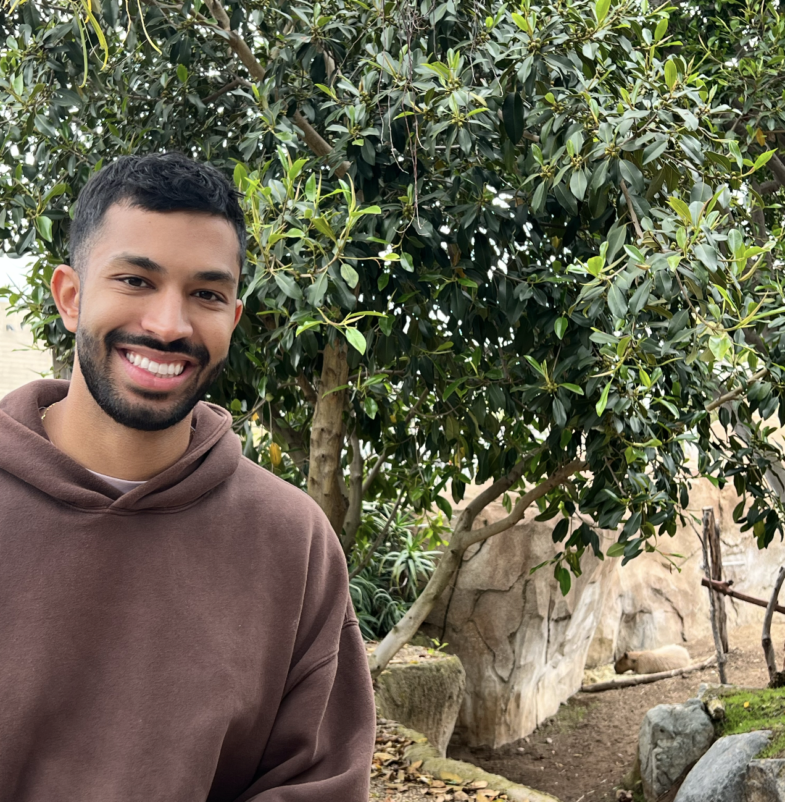
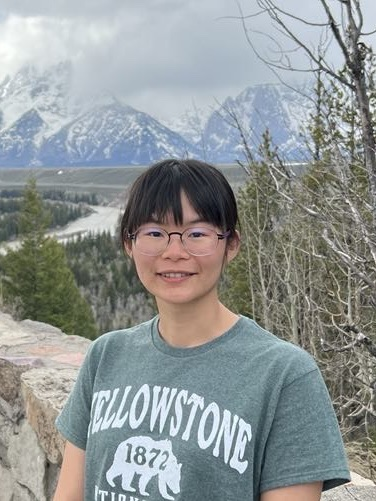
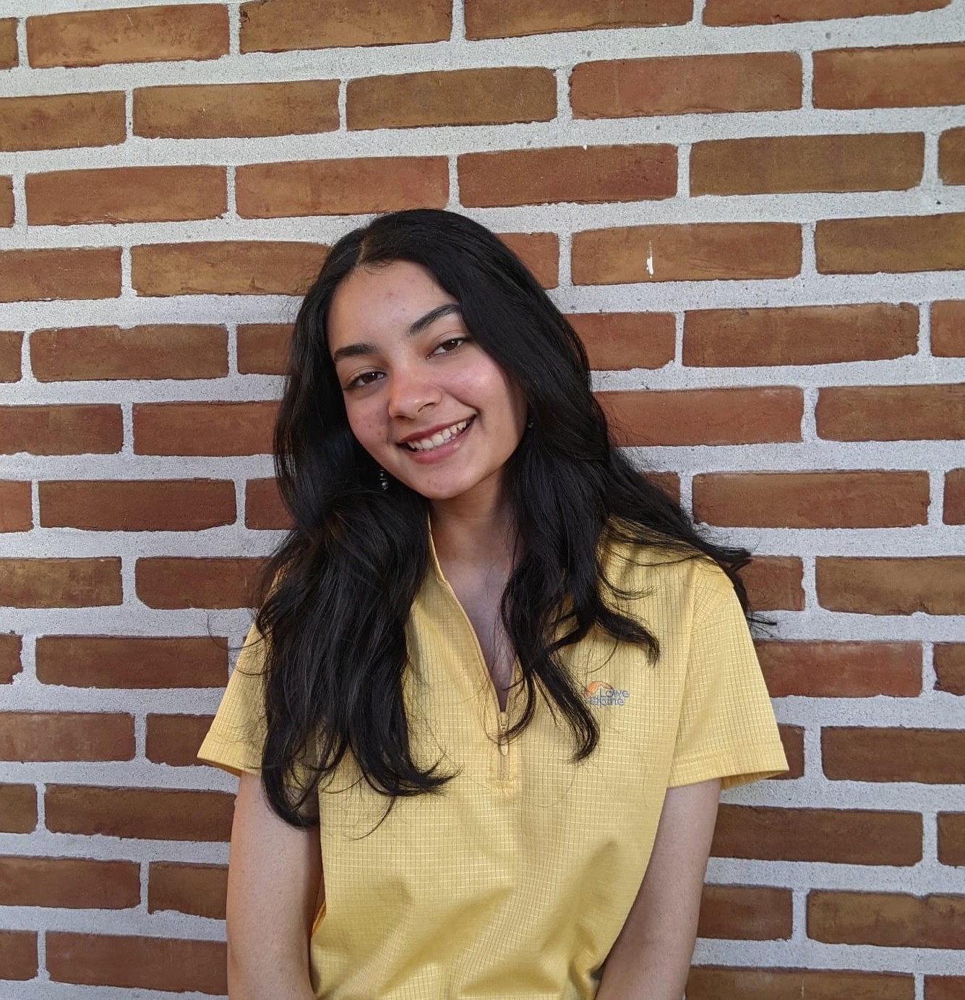
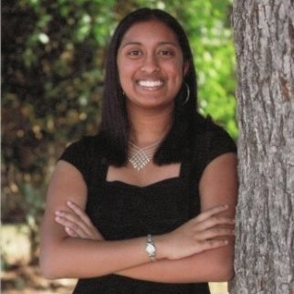
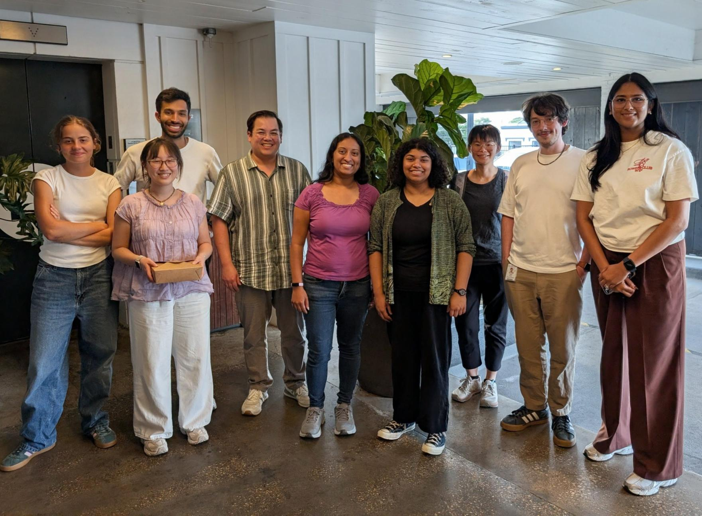
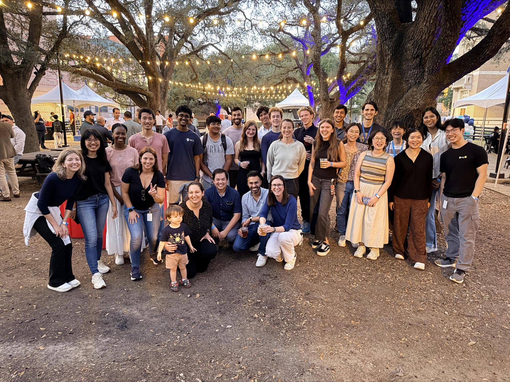
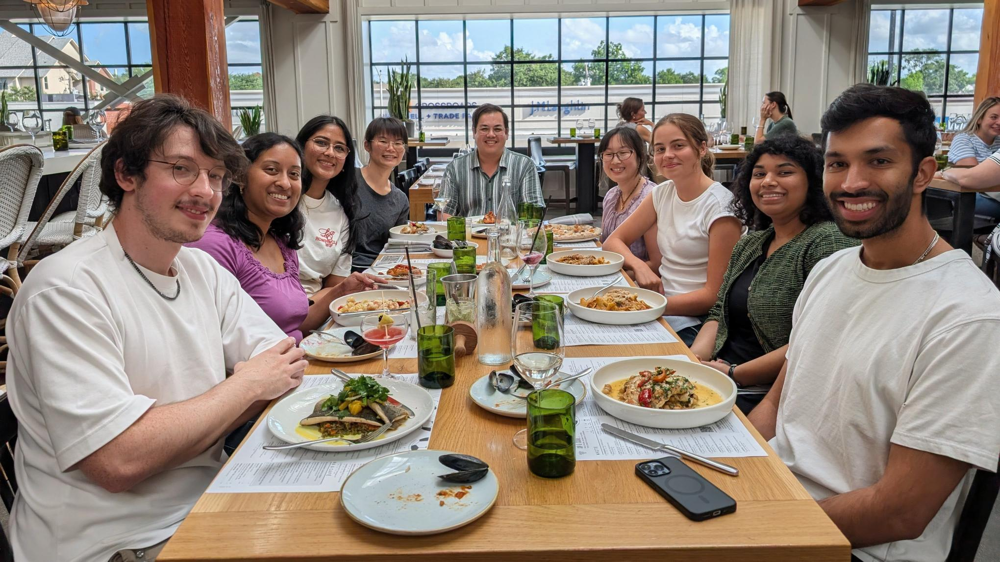
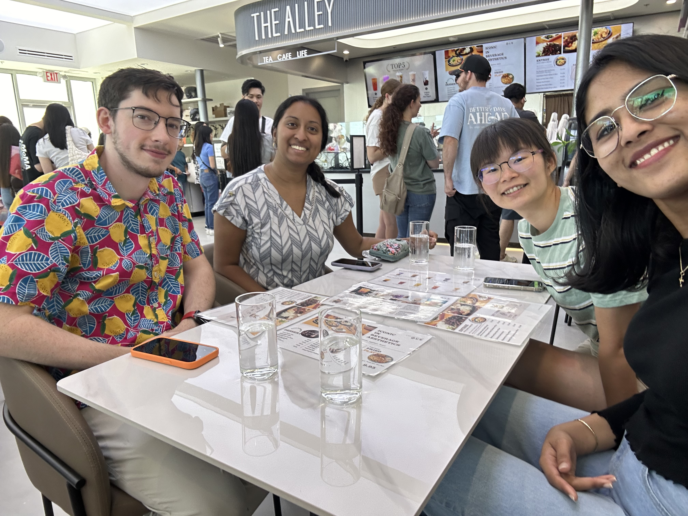
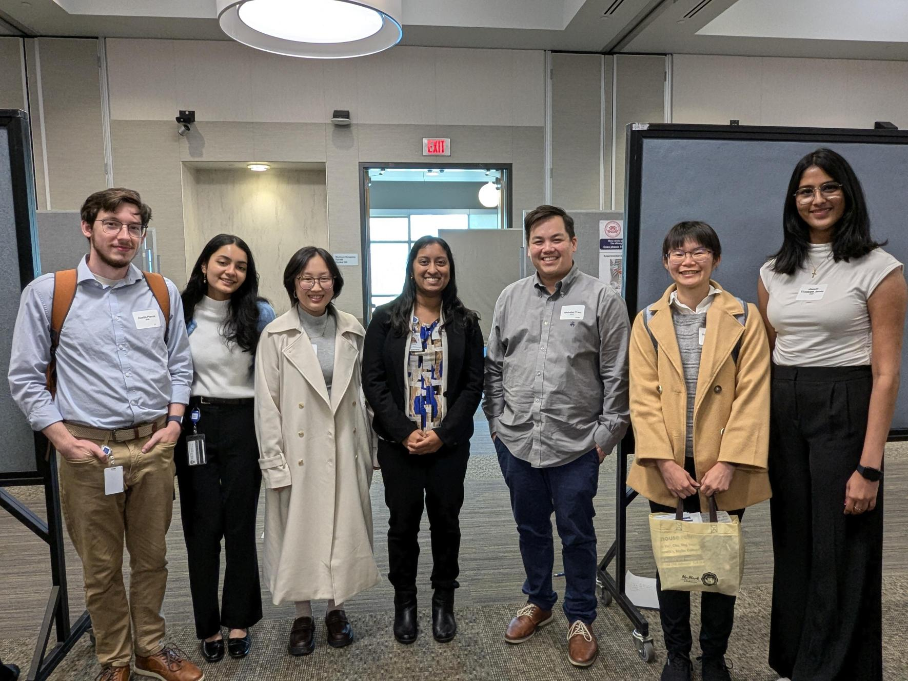
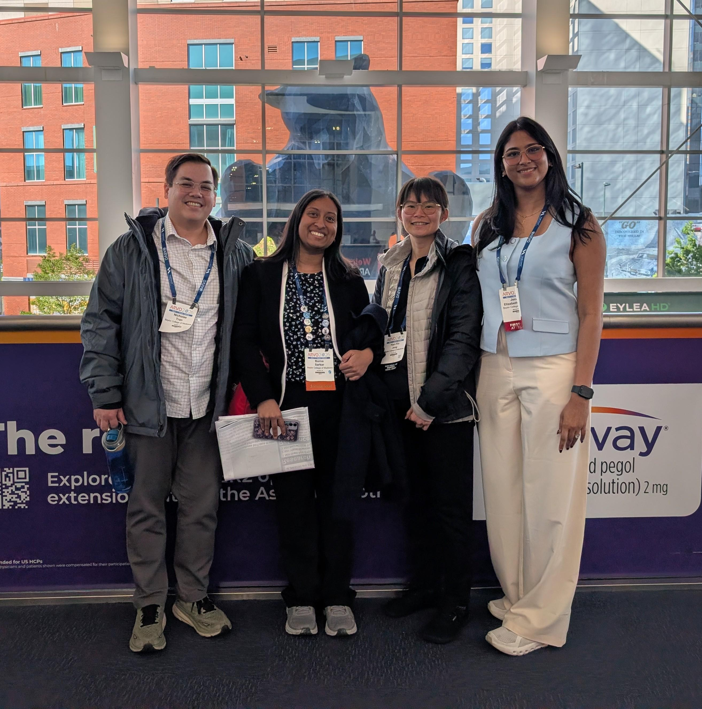

nicholas.tran@bcm.edu
Nicholas Tran PhD, Principal Investigator
Dr. Tran is an Assistant Professor at Baylor College of Medicine in the Department of Molecular and Human Genetics. He received his Ph.D. from Washington University in St. Louis in Molecular Genetics and Genomics where he was mentored by Dr. Shiming Chen. He performed his postdoctoral research in Dr. Joshua Sanes's lab at Harvard University.
Our research focuses on cell type-specific mechanisms underlying retinal ganglion cell degeneration in traumatic injury and diseases such as glaucoma. Ultimately, our work seeks to elucidate guiding principles of neuronal survival and axon regeneration that will serve to improve therapies for different forms of neurodegeneration within and beyond the retina.
Outside of the lab, he likes to spend time with family and friends. He enjoys cooking and exploring Houston's food scene. He's also a sci-fi nerd.

justin.dhindsa@bcm.edu
Justin Dhindsa, Graduate Student
Justin is currently a 3rd-year graduate student in the Genetics & Genomics program and 4th year in the MSTP. He received his B.S. in Biology from Duke University in 2021.
His current work involves applying single-cell genomics and functional genomics to study the genetics of human RGC development and susceptibility to optic neuropathy.
Outside of the lab, Justin likes to run, rockclimb, go to the gym, and cook!

Chantel
chantel.george@bcm.edu
Chantel George, Graduate Student
Chantel is a first-year graduate student in the DDMT program. She received her B.S. in Chemical Biology from UC Berkeley in 2023.
She is interested in studying molecular mechanisms that regulate axon regeneration and promote functional recovery post-injury in the retina.
Outside of the lab, Chantel enjoys listening to music, watching commentary videos, and reading.

Han-Yin
han-yin.jeng@bcm.edu
Han-Yin Jeng MS, Graduate Student
Han-Yin grew up in Taiwan and earned her B.S. and M.S. degrees in Medical Laboratory Science and Biotechnology from Taipei Medical University. During her studies, she investigated drug mechanisms in lung adenocarcinoma. After graduation, she worked as a research assistant at the Research Center of Cell Therapy and Regeneration Medicine at Taipei Medical University, where she studied the immunoregulatory effects of mesenchymal stem cells (MSCs) on lung inflammation and developed Good Tissue Practice (GTP) protocols for producing cell products for cell therapy.
Han-Yin later moved to Houston to pursue a Ph.D. in the DDMT program at Baylor College of Medicine in the Tran Lab. Her current research focuses on elucidating the role of pro-inflammatory cytokines in retinal ganglion cell (RGC) regeneration and degeneration, using both 2D and 3D adult primary RGC and iPSC-derived RGC models, along with AAV and HDAd-based gene delivery systems.
Outside of the lab, Han-Yin likes to listen to podcasts about mysterious topics.

Grace
gcp3@rice.edu
Grace Park, Undergraduate Student
Grace is currently a third year student at Rice University majoring in Neuroscience.
She is interested in investigating the link between neuronal activity and resilience following optic nerve injury. She is seeking to optimize methodologies for precisely measuring cell activity levels so that they may be correlated with or against RGC resilience. Namely, she is evaluating the effectiveness of cyclic adenosine monophosphate (cAMP) biosensors in reflecting neuronal activity levels.
Grace enjoys going to concerts & museums, and playing music.

Austin
austin.pierce@bcm.edu
Austin Pierce MS, Research Assistant
Austin received his B.S. in Biology from Indiana University.
Austin is interested in studying the development of regenerative therapeutics.
In his free time, he likes to explore the Greater Houston area or stay in and binge shows.

Rhea
rhea.ray@bcm.edu
Rhea Ray, Undergraduate Student
Rhea is a third-year student at Rice University majoring in Neuroscience and Social Policy Analysis.
She is interested in researching the selective vulnerability and resilience of Retinal Ganglion Cell types after Optic Nerve Injury, and specifically looks to investigate the effects of neuronal activity on alpha-RGC resilience. Through this relationship, she is working to elucidate the mechanism of Corticotropin-Releasing Hormone (CRH) and its ability to support RGC resilience.
In her free time, Rhea likes to play intramural flag football, learn languages, and solve puzzles.

Borna
borna.sarker@bcm.edu
Borna Sarker PhD, Postdoctoral Fellow
Borna received her BS in Biology from Trinity University and her MS in Biomedical Sciences at Texas A&M University. She went on to complete her PhD in Cell and Molecular Biology at The University of Texas at San Antonio.
Her research interests include understanding the contributions of neuroglial and neurovascular interactions to the pathogenesis and progression of central nervous system diseases, and how these dynamics can be targeted and modulated to find novel treatment regimens for retinopathies and neurodegenerative diseases.
Borna's hobbies include singing, reading, learning languages, jigsaw puzzles, and watching movies and TV.

Kancheng
kancheng.yin@bcm.edu
Kancheng Yin MS, Graduate Student
Kancheng attended UCSD for both her undergraduate and masters degrees. She is a 3rd year graduate student in the Genetics & Genomics program.
She's interested in understanding the mechanisms behind axon regeneration and leveraging them for potential therapies.
In her free time, Kancheng likes to crochet, sing karaoke, and hang out with her cat Kiki.
Life In & Outside the Lab








Lab Alumni
Jeswin Elizabeth James, MS
Research Assistant • 2024–2026
Current: Neuroscience PhD student at Weill Cornell/Houston Methodist
Justin Ma, PhD
Postdoctoral Fellow • 2023–2026
Current: Exploring industry opportunities
Tingkuan Chu, MS
Research Assistant • 2022–2024
Current: Molecular Genetics & Genomics PhD student at Washington University in St. Louis
Jessica Ehondor
Research Technician • 2022–2023
Current: Medical student at Baylor College of Medicine